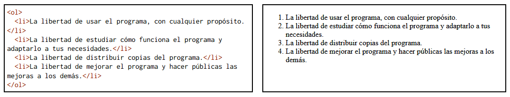
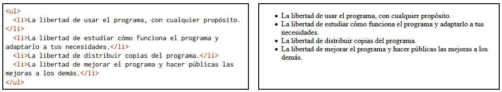

Listas
Las listas, son aquellas etiquetas que permiten crear conjuntos de elementos en forma de listas; estas pueden ser ordenadas o desordenadas. Normalmente, se encuentran precedidas de un guión o número.
Una lista ordenada, se representa mediante la etiqueta ol; y cada uno de sus elementos, se representa mediante la etiqueta li
Ejemplo de lista ordenada:

Una lista desordenada, se representa mediante la etiqueta ul; y cada uno de sus elementos, se representa mediante la etiqueta li
Ejemplo de lista desordenada:
